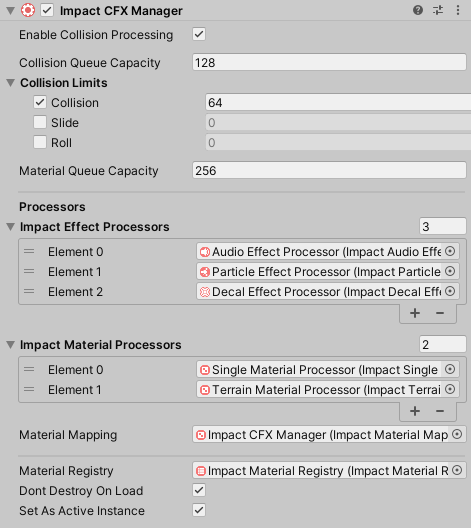

Impact CFX Manager
To create an Impact CFX Manager, the easiest way is to navigate to . An Impact CFX Manager game object will be created in your scene, along with several other objects and components that will likely be needed for the system to function as expected.
You can also add the Impact CFX Manager component by itself by going to .
Once you have an Impact CFX Manager, there are many properties you can edit:
- Enable Collision Processing – If false, collisions will not be queued and processed, meaning no effects will be played. However, updates will still be run on any active effects.
- Collision Queue Capacity – The maximum number of collisions that can be processed in a single frame.
- Collision Limits – Optional limits for the different kinds of collisions. Setting limits can help prevent the Collision Capacity being used up by one particular type of collision. For example, Unity calls all OnCollisionEnter methods before OnCollisionStay, and so when a lot of collisions are happening, the Collision Capacity may get filled up before OnCollisionStay is called.
- Material Queue Capacity – The capacity of the array used to gather material data from the colliding objects. This should be at least twice as much as the Collision Queue Capacity, to allow for at least 1 material for both objects involved in a collision.
- Impact Effect Processors – These are processors used for calculating the results for specific effect types (e.g. Audio, Particle, and Decal). Processors must be present for the corresponding effect type to be played.
- Impact Material Processors – These are processors used for retrieving Impact Materials for specific object types. Processors must be present for material data to be retrieved from the corresponding object type.
- Material Mapping – The processor used for Material Mapping.
- Material Registry – An Impact Material Registry that contains materials to pre-load. If an Impact Material is not present in the registry, effects will not work for it.
- Don't Destroy On Load – Make this manager and its effects persist between level loads. If you want to have separate Impact CFX Managers in each scene, disable this.
- Set as Active Instance – Make this manager the primary Impact CFX Manager instance on Awake.
Material Mapping
Material Mapping allows you to map Unity's Physics Materials to Impact Materials. This is useful so that you don't necessarily have to add an Impact Object component to all of the objects in your scene.
The Impact Material Mapping Processor is responsible for handling material mapping. This component is automatically created if you used the option above, but you can manually add this component by going to .
Simply add an entry to the list, assign a Physic Material or Physics Material 2D, and assign the Impact Material it will map to.
The Capacity property defines how many materials the processor can process in a single frame. This automatically matches the Material Capacity of the Impact CFX Manager, but you can override it if you wish.
If the Register Materials On Start property is enabled, all Impact Materials defined in the mappings will automatically be registered with the Impact CFX Manager.
Managing Registered Materials
As mentioned in previous sections, Impact Materials must be registered with the Impact CFX Manager in order to work. Impact CFX provides several options for registering Impact Materials.
- Impact Material Registry - You can create an Impact Material Registry asset and assign it to your Impact CFX Manager so that all materials and effects in the registry will be pre-loaded on Start. This has the benefit of loading everything up-front so that there are no loading hitches during gameplay.
- Register Materials On Start - Individual Impact Objects as well as some other components have the option to register their own materials when they load. This has the benefit that you don't have to maintain an Impact Material Registry, and it also ensures that the materials an object uses will always be registered. However, the downside is that first-time loading of the effects can cause hitches during gameplay.
- Scripting API - ImpactCFXGlobal and ImpactCFXManager have methods that allow you to manually manage registered materials from your own scripts. This gives you the most control over how materials are registered. See the API Reference for ImpactCFXGlobal and ImpactCFXManager for more details.